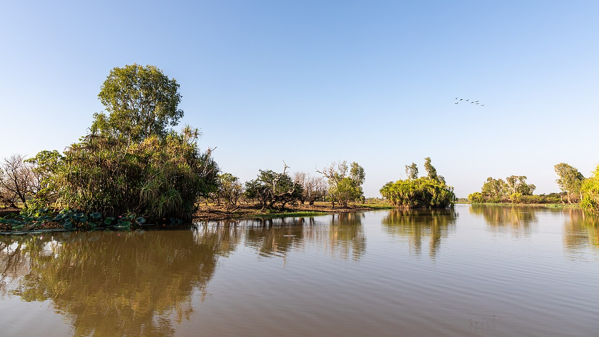

Kakadu National Park from Jabiru and Cooinda · 5-day family itinerary
Five dry-season days for a ten-year-old and a seven-year-old in the north and centre of Kakadu National Park. The plan sleeps two nights in Jabiru and two at Cooinda, assumes an ordinary 2WD, which Parks Australia says can reach Ubirr, Cahills Crossing, Burrungkuy (Nourlangie) and Yellow Water (for the other stops, check road status on the Kakadu access report), walks in the cooler morning, and treats every billabong and river as crocodile water: look from a platform or a boat, and swim in a pool.

Photo: Dietmar Rabich / Wikimedia Commons / “Kakadu (AU), Kakadu National Park, Yellow Water -- 2019 -- 3914” / CC BY-SA 4.0. Yellow Water (Ngurrungurrudjba) beside Cooinda (Day 4), photographed on 31 October 2019.
,_Kakadu_National_Park,_Yellow_Water_--_2019_--_3914.jpg){kind=link}
Checked before you commit
This illustrative route flies into Darwin, drives to Kakadu, sleeps two nights in Jabiru and two at Cooinda, then drives back to Darwin. We read the Parks Australia Kakadu pages for getting here, getting around, passes, seasons, safety, phone coverage, visitor centres, the daily access report and each site and walk on 26 November 2026. Nothing was booked.
Two bases, north then centre, no 4WD tracks. Parks Australia gives about three hours from Darwin by the Stuart and Arnhem highways, puts the Bowali Visitor Centre near Jabiru 250 km from Darwin, and says there are no taxis, buses or trains in the park. Its driving times: Jabiru to Ubirr 20 minutes, Bowali to Burrungkuy (Nourlangie) 25 minutes, Burrungkuy to Cooinda 30 minutes.
Walks before the heat, rest in the middle of the day. Parks Australia advises walking in the cooler parts of the day and avoiding 2.30 pm to 6.30 pm. The longest walk here is Burrungkuy (Nourlangie), 1.5 km return and about 2 hours, with a flat path to the main gallery. Afternoons go to a pool, the Bowali Visitor Centre or the Warradjan Cultural Centre.
We didn’t check rooms in Jabiru or at Cooinda, the hire car, flights, the Yellow Water cruise or ranger talk times. Every visitor needs a Kakadu park pass; Parks Australia sells 7-day passes online. A booking-hub link doesn’t hold a room, a car, a cruise seat or a pass.
Planning boundary: dates are illustrative; the worked example runs Monday 5 to Friday 9 July 2027, counted from the flight in to the flight out. Parks Australia calls mid-June to mid-August Wurrkeng, the cold weather season, with 17°C to 32°C, low humidity and daytime temperatures around 30°C. It says temperatures in the park regularly reach 30°C or more, so this plan walks early.
Parks Australia publishes a daily access report. When we read it on 26 November 2026, Jim Jim Falls, Twin Falls and the Karnamarr campground were closed for 2026, and Maguk was closed for the wet season. Which sites will be open in July 2027 wasn’t known. A booking-hub link doesn’t prove a booking.
Route and family-coordination brief
Party: two adults, a ten-year-old and a seven-year-old. Bases: two nights in Jabiru, which Parks Australia calls the park’s main township, then two at Cooinda in the Yellow Water region. Assumption: an ordinary 2WD hire car from Darwin; we didn’t check rooms, hire terms or fares. Parks Australia warns that some hire companies won’t allow a 2WD on unsealed roads, so read your hire terms.
Pass rule: every visitor needs a Kakadu park pass, valid for 7 days, sold online or at outlets including the Bowali Visitor Centre and Cooinda Lodge. For the dry season (15 May to 31 October), Parks Australia lists A$40 per adult, A$20 per child aged 5 to 15 and A$100 for a family pass (two adults and two or more children). In 2026 it charged wet-season rates from 1 July; it didn’t say whether that continues in 2027.
Crocodile rule: Parks Australia says saltwater crocodiles live in most areas of water in the park, including floodplains, freshwater billabongs, creeks and rivers, and that where there are no warning signs you should assume they are present. They usually hunt submerged and can attack in knee-deep water, so even wading is dangerous, and children are at particular risk at the water’s edge. Here, crocodiles are watched only from platforms, boardwalks or a cruise boat.
Swim rule: Parks Australia says the safest place to swim in Kakadu is a public or hotel pool, and never alone. It lists a 50-metre public pool in Jabiru, and says Cooinda has a swimming pool non-guests are welcome to use, plus a playground.
Heat rule: Parks Australia advises drinking at least four litres of water a day, and at least one litre per person per hour when walking; a broad-brimmed hat, sunscreen and sturdy shoes; and no walking between 2.30 pm and 6.30 pm. It advises against sports drinks, diet cordials and caffeinated drinks, which can add to dehydration.
Phone rule: Parks Australia says there is no mobile coverage in most of the park. It lists coverage at places including Cooinda, the Bowali Visitor Centre and the Burrungkuy (Nourlangie) rock art site. Tell someone where you are going each day and when you plan to be back.
Respect rule: for cultural reasons, alcohol isn’t permitted at Ubirr. Don’t touch or rub rock paintings. Drones aren’t permitted in Kakadu without a park permit, and Parks Australia doesn’t issue permits for recreational drone use. Dogs aren’t allowed, apart from guide, hearing and assistance dogs.
Left out: Jim Jim Falls and Twin Falls, which Parks Australia lists as 4WD only and which were closed for 2026 when we read the access report; Maguk and Gunlom, which need a 4WD or an unsealed road and were seasonally closed when we looked; and any swim in a natural pool.
In Alfred, while the trip is still Planning, you can keep or change the hotel and then the flights Alfred picked, and browse the activity and meal carousels. Their Like toggles aren’t saved. Parks Australia says there are no commercial flights to Kakadu, so the flights in this plan are to Darwin. We did not test whether city search offers Jabiru, Cooinda or Kakadu.
Day 1 — Fly into Darwin, drive to Jabiru
Fly into Darwin, which Parks Australia names as a flight hub for Kakadu, and collect the hire car. It says there are currently no commercial flights to Kakadu itself. Buy the park pass online before you set off, or at the Bowali Visitor Centre.
Drive the Stuart Highway, then the Arnhem Highway: about three hours, Parks Australia says, and 250 km to Bowali. It advises refuelling as often as you can; fuel is sold at Jabiru and Cooinda. Our suggestion: arrive in daylight, as Parks Australia asks drivers to watch out for wildlife.
Stop at the Bowali Visitor Centre near Jabiru, open 9 am to 5 pm in the dry season, according to Parks Australia, to ask about walks, ranger talks and site status, and see the walk-through display. Then check in to your Jabiru lodging and, if there’s energy left, swim at the town’s 50-metre public pool.
Fallback: if the flight lands late, drive straight to Jabiru and leave Bowali for the next afternoon; nothing in the park is planned for today.
Live-check: the Kakadu access report; Bowali hours; Jabiru pool hours; your hire car’s rules on unsealed roads.
Day 2 — Ubirr rock art and Cahills Crossing
Drive 20 minutes from Jabiru to Ubirr. Walk the 1 km circular track past the rock art galleries, which Parks Australia says include x-ray paintings, contact art and a painting of a thylacine. It says ranger-guided talks are included in the park pass; check times at Bowali.
If everyone’s happy, climb to the lookout over the Nadab floodplain: Parks Australia calls it a steep 250 m climb and says to allow at least an hour for the walk. Then drive to the Cahills Crossing viewing area on the East Alligator River, where three platforms linked by a rainforest walk overlook the causeway.
Watch from the platforms only. Parks Australia says not to cross the causeway on foot and that it is not safe to walk on the river crossing at any time. Crocodiles gather there to feed as the tide pushes over the road, from July and peaking from September, it says; check the tide times at Bowali or online. Then back to Jabiru for lunch, the pool and a rest through the hottest hours.
Optional: Parks Australia calls sunset at the Ubirr lookout a highlight. Going back means driving to Jabiru at dusk or after dark, so drive slowly and watch for wildlife.
Fallback: if the climb is too much, keep to the art galleries. If the tide isn’t pushing over the crossing, fewer crocodiles may be feeding; enjoy the rainforest walk between the platforms and don’t go closer to the water.
Live-check: Ubirr and Cahills Crossing on the access report; Ubirr opening times; ranger talk times; tide times for Cahills Crossing.
Day 3 — Burrungkuy (Nourlangie), then on to Cooinda
Check out and drive 25 minutes from Bowali to Burrungkuy (Nourlangie), where Parks Australia says the gates open at 7 am. Walk the 1.5 km return track, about 2 hours, to the Anbangbang gallery and shelter, where paintings include Namarrkon, the Lightning Man, and on to the Kunwarddewardde lookout. The path to the main gallery is flat and wheelchair accessible; flights of steps lead to the other sites.
If legs are fresh, walk the Anbangbang Billabong loop nearby, 2.5 km and about 1 hour through paperbark and woodland, and have a picnic lunch at the tables. Look for magpie geese, egrets and jacanas, and keep to the track; the edge of a billabong is crocodile habitat.
Drive 30 minutes to Cooinda and spend the hot afternoon at the Warradjan Cultural Centre, 1 km from Cooinda Lodge and open 9 am to 5 pm from April to October, according to Parks Australia, which says artists and weavers often give demonstrations there. Then the pool.
Fallback: if it’s hot by mid-morning, skip Anbangbang and go straight to Warradjan. The Nawurlandja lookout, 0.3 km one way and steep, about 40 minutes, is a shorter alternative.
Live-check: Burrungkuy and Anbangbang on the access report (Parks Australia says the Anbangbang trail may open in stages depending on water levels); Warradjan hours.
Day 4 — Yellow Water by boat and boardwalk
Take an early Yellow Water cruise from Cooinda. Parks Australia says the Aboriginal-run cruise runs all year and suggests sunrise or sunset, as crocodiles spend more time submerged in the heat of the day. We didn’t check departure times, prices or seats; the access report says to contact the operator for bookings and departure times.
Back on land, walk out on the Yellow Water boardwalk. Parks Australia says the boardwalk and billabong walk are accessible from July to November, and that when the waters recede a 2.6 km return walk crosses the floodplain to a viewing platform on Home Billabong. When we read the access report in November 2026, only the pontoon section was open.
Lunch and a long rest at Cooinda: shade, the pool and the playground.
Optional: go back to the Yellow Water boardwalk near sunset, which Parks Australia calls a good time to spot crocodiles. Stay on the boardwalk and platform.
Fallback: if the cruise is full, watch from the boardwalk at sunrise and sunset instead; if anyone is tired, Warradjan is a cool second visit.
Live-check: cruise times and bookings; the boardwalk and Home Billabong on the access report.
Day 5 — Mamukala wetlands, then Darwin
Check out early and drive north to the Arnhem Highway. Stop at Mamukala wetlands, where Parks Australia’s own five-day plan gives a 300 m return walk to the bird hide, and the full walk is 3 km, about 1 hour 30 minutes. It says the hide can be reached by wheelchair users and that by late August the wetlands fill with tens of thousands of magpie geese, so July may be quieter.
Drive on to Darwin. Parks Australia gives about three hours between Darwin and the park; allow at least that, plus stops.
Return the hire car and fly home. Our suggestion: book an evening flight so the drive isn’t rushed.
Fallback: if the morning runs late, see the bird hide only and go.
Live-check: Mamukala on the access report; your flight time; hire car return time.
Planning notes
Related travel note: Knee-deep water is deep enough for a crocodile.
Dates are illustrative. At decision time, recheck the Kakadu access report, park pass prices for 2027, Bowali Visitor Centre and Warradjan hours, Yellow Water cruise times, ranger talk times, Cahills Crossing tide times, the Jabiru pool hours, your lodging, your hire car terms and your flight times.
Why two bases. Parks Australia gives Jabiru to Ubirr as 20 minutes and Jabiru to Cooinda as 30 minutes, and says moving from one site to another takes time in a park of almost 20,000 square kilometres. Sleeping in Jabiru for Ubirr and Cahills Crossing, then at Cooinda for Yellow Water, keeps each morning’s drive short.
Why July. Parks Australia calls the dry season (May to October) the most popular time to visit, with most visitor sites open, and suggests booking accommodation ahead. July falls in Wurrkeng, with daytime temperatures around 30°C and about 17°C at night. Its crocodile-watching peak at Cahills Crossing comes later, from September.
What we couldn’t confirm. 2027 pass prices; which sites will be open in July 2027; Ubirr opening times; ranger talk times; Yellow Water cruise times and prices; Jabiru pool hours; and a drive time from Cooinda or Mamukala to Darwin, which Parks Australia doesn’t publish. Also not checked: lodging, food, school holidays, sunrise and sunset times.
Crocodile country. Parks Australia says crocodiles can stay hidden underwater for long periods and you won’t always see them, so a calm, clear billabong isn’t proof of safety. Stand back from the edge, keep children close, and don’t paddle, wash or prepare food at the water’s edge.
Plan a trip
Start with your people, dates and pace, then review the editable plan before booking.
Plan a trip